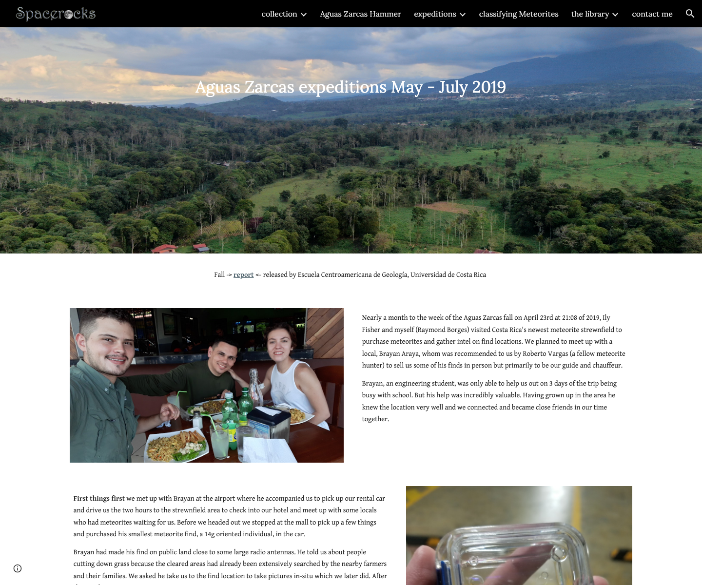
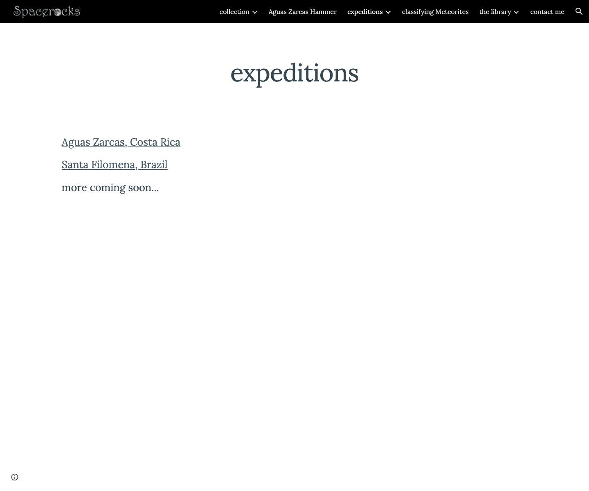
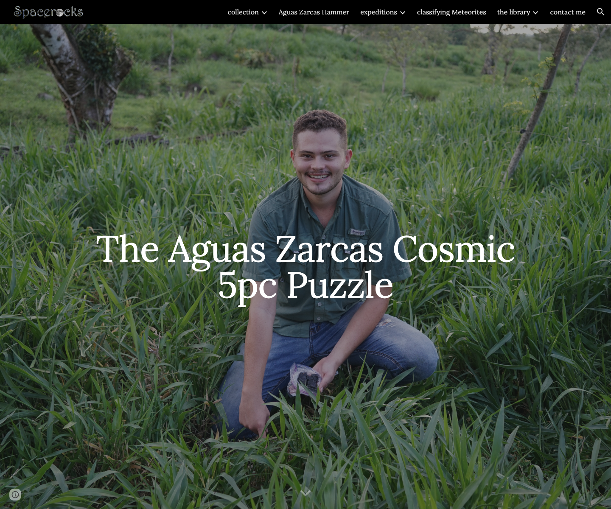
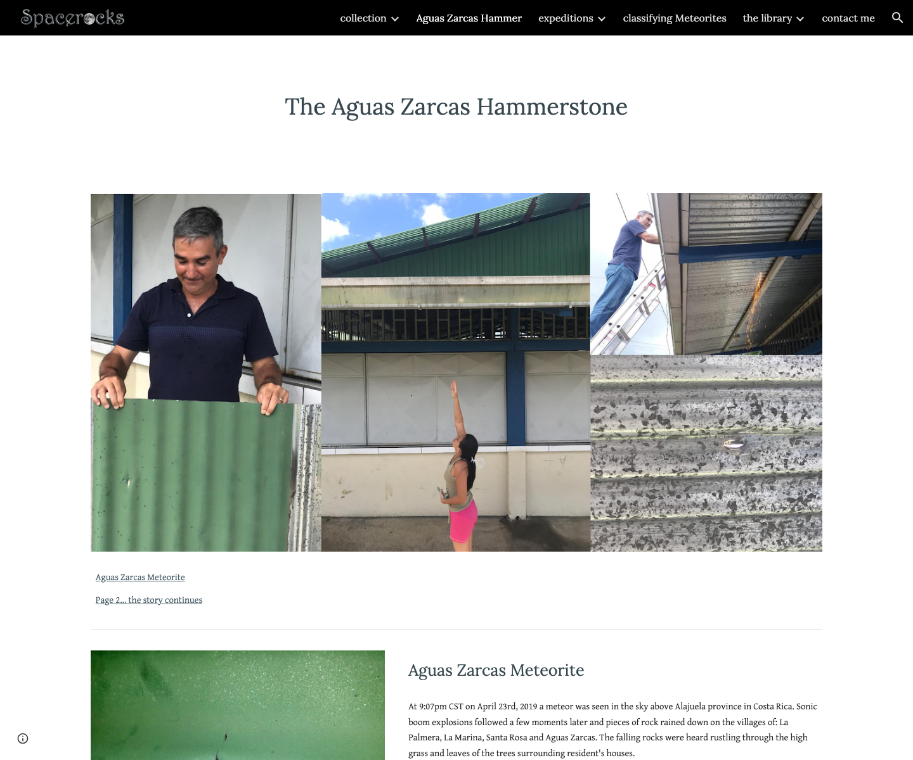
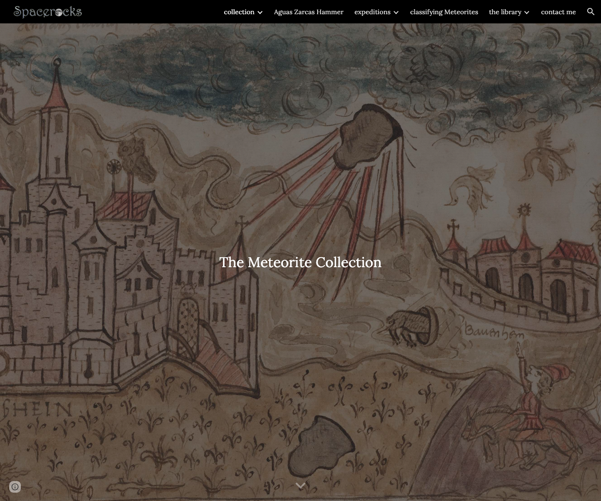
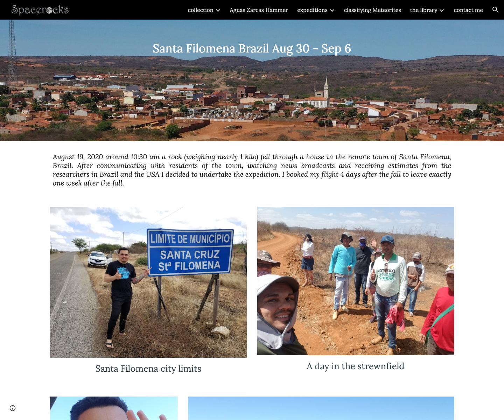
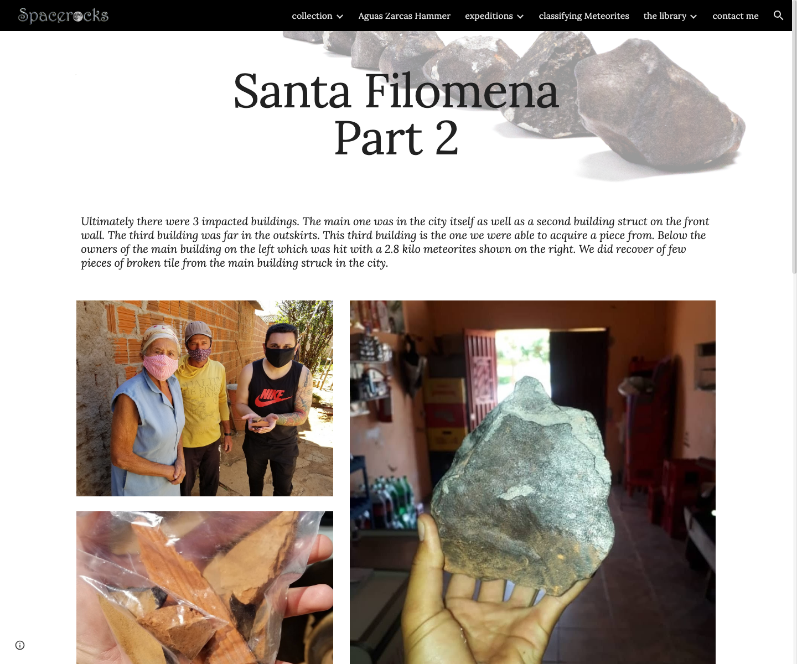
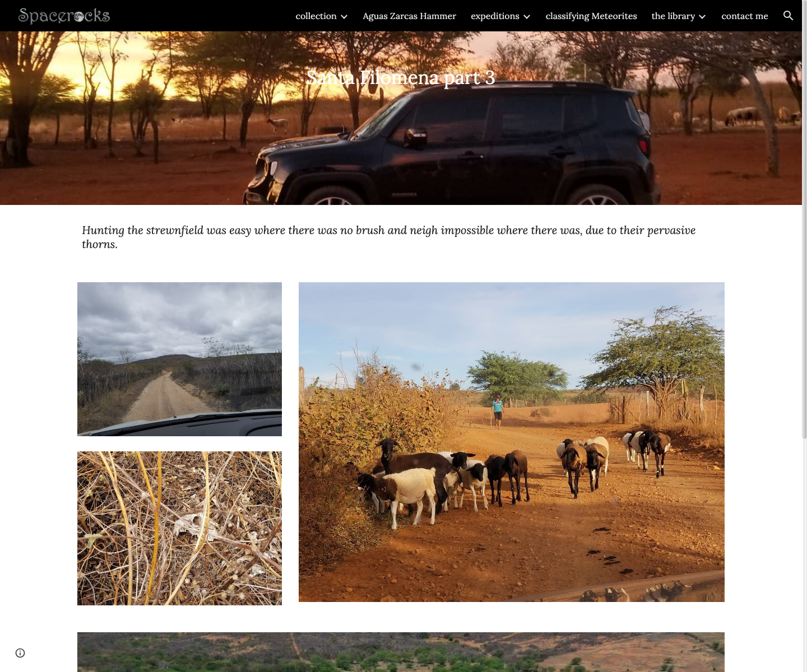

Provenance first
Specimen notes prioritize mass, classification, status, and collection context before price.
Shop, archive, and field journal
Spacerocks brings together meteorite sale listings, a clearly marked not-for-sale personal collection, and expedition notes from fresh fall recoveries.

Aguas Zarcas archive
Field archiveActive shop
Listings are built for direct purchase workflows. Payment buttons can point to PayPal, Link checkout, or another cart flow when enabled.

Puzzle imageA 188.5 g five-piece Aguas Zarcas presentation for collectors who value visual continuity and documented fall context.

Hammerstone imageA display panel built around the hammerstone story, prepared for collectors who want the event context beside the specimen.
Small, vetted availability lists for collectors seeking classified stones, irons, carbonaceous pieces, or educational examples.
Display-safe casts and digital model projects for classrooms, talks, collection planning, and touch-friendly outreach.
Personal collection
These records are a private collecting archive. They are shown for education, provenance discipline, and science context, not as active listings.

Collection archive20 collection passports shown
Meteorite adventures
The adventure journal keeps the human work visible: travel windows, search conditions, recovery totals, and the odd details collectors remember.

Santa Filomena field archiveAug 30-Sep 6 expedition notes from the post-fall search, with 700 g recovered and a largest individual of 260 g.
A fall archive centered on a 14 g oriented individual, a 190 g cosmic puzzle, Rocky the meteorite dog, and the hammerstone panel.

Field image
Field imageTrust and orientation
The site borrows the strongest habits of established meteorite dealers and field collectors: passport-style records, status clarity, and enough science orientation to ask better questions.
Each collection card separates mass, class, status, and story so provenance is readable at a glance.
Available, not-for-sale, scarce, field, and science badges make it clear what can be purchased and what is archival.
Classifications are presented as MetBull-oriented reference points and should be verified against final specimen documentation.
Practical questions, current availability, provenance scans, and display options all start with a collector-to-collector email.
Collector contact
Use a short note with the meteorite name, your collecting goal, and whether you need photos, dimensions, classification references, or display help.